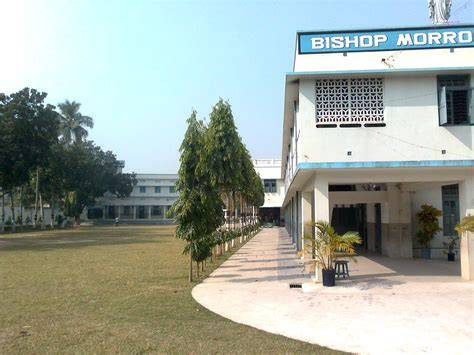
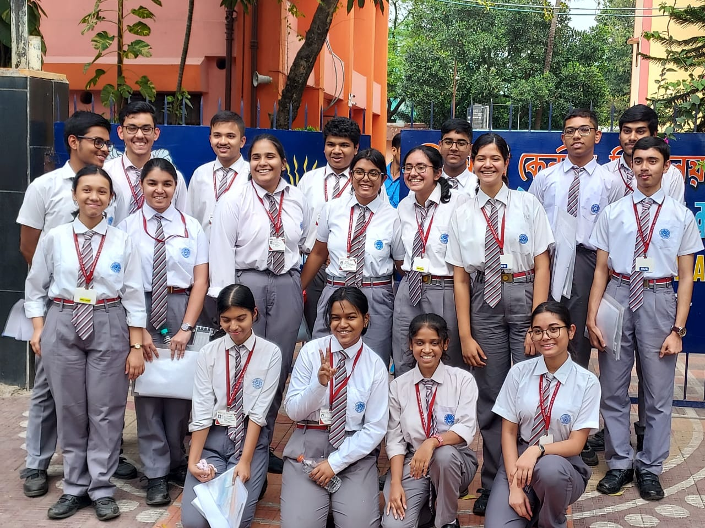
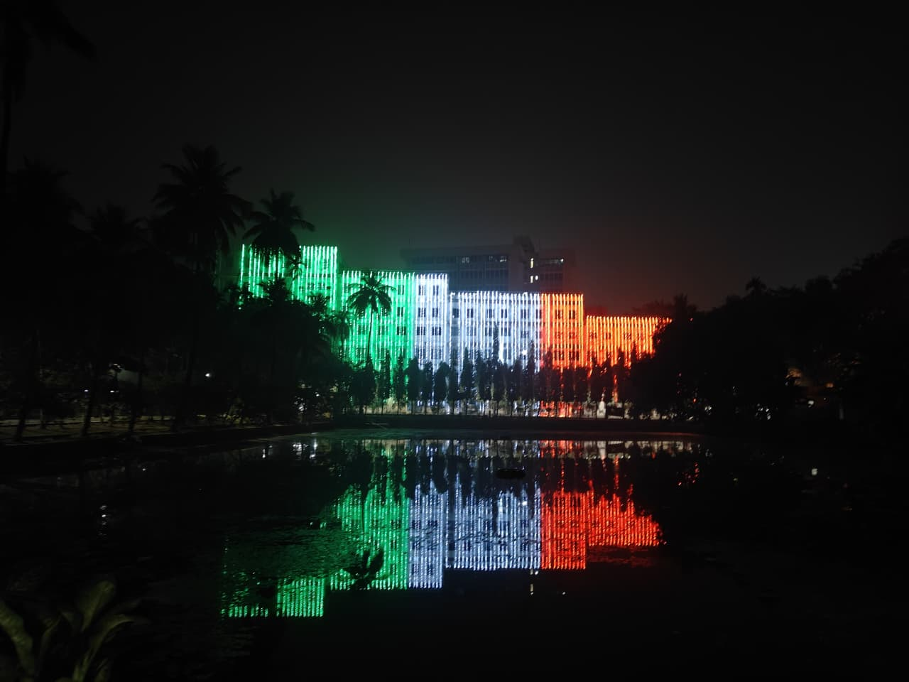

PERSONAL WRITING
Life, learning
& places.
Memories from school, life at ISI, and the places I visit. A personal corner alongside my academic work.

Life & learning · 1 MIN READ
Where it all began
The classrooms, responsibilities, and small moments that shaped my school years.
Read story ↗
Life & learning · 1 MIN READ
Two years in Kolkata
A new city, serious preparation, and a peer group that made those years memorable.
Read story ↗
Life & learning · 1 MIN READ
Life at ISI, so far
Finding my way through an intense course, with the support of peers and a shared interest in mathematics.
Read story ↗TRAVEL NOTES
Travel stories are still to come.
I’ll add reflections and photographs from my travels here.